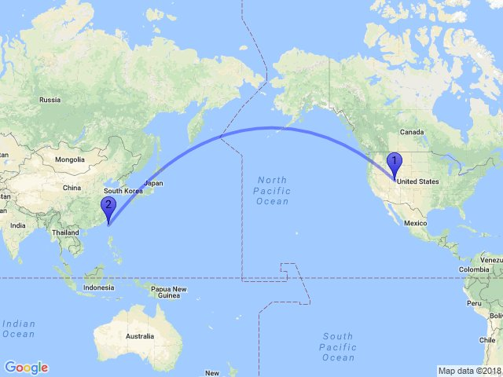

							
<!-- Second Section -->
    <section id="second" class="main special">
        <header class="major">
            <h2>Supplementary Knowledge</h2>
        </header>
        <ul class="features">
            <li>
                <span class="icon">  </span>
                <h3> Wasserstein Distance </h3>
                <p>An outline of thinking about Wasserstein Metric (Earth-Mover Distance)</p>
            </li>
            

        </ul>
        <footer class="major">
            <ul class="actions special">
                <li><a href="projects.html" class="button">See More</a></li>
            </ul>
        </footer>
    </section>